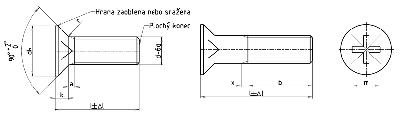

Příklad označení zápustného šroubu se závitem M5, délky l = 20 mm, pevnostní třídy 8.8, s křížovou drážkou tvaru Z:
ZÁPUSTNÝ ŠROUB ISO 7046-2 - M5 ×20 – 8.8 – Z
Je-li požadována určitá hloubka drážky (řada 1 nebo 2) udává se číslo řady v označení, například:
ZÁPUSTNÝ ŠROUB ISO 7046-2 - M5 ×20 – 8.8 – Z1
| Závit | M2 | M2,5 | M3 | (M3,5) | M4 | M5 | M6 | M8 | M10 | ||
|---|---|---|---|---|---|---|---|---|---|---|---|
| rozteč P | 0,4 | 0,45 | 0,5 | 0,6 | 0,7 | 0,8 | 1 | 1,25 | 1,5 | ||
| bmin. | 25 | 25 | 25 | 38 | 38 | 38 | 38 | 38 | 38 | ||
| dkteoretický | 4,4 | 5,5 | 6,3 | 8,2 | 9,4 | 10,4 | 12,6 | 17,3 | 20 | ||
| dk max.1) | 3,8 | 4,7 | 5,5 | 7,3 | 8,4 | 9,3 | 11,3 | 15,8 | 18,3 | ||
| dk min.1) | 3,5 | 4,4 | 5,2 | 6,9 | 8,04 | 8,9 | 10,9 | 15,4 | 17,8 | ||
| kmax.1) | 1,2 | 1,5 | 1,65 | 2,35 | 2,7 | 2,7 | 3,3 | 4,65 | 5 | ||
| rmax. | 0,5 | 0,6 | 0,8 | 0,9 | 1 | 1,3 | 1,5 | 2 | 2,5 | ||
| xmax. | 1 | 1,1 | 1,25 | 1,5 | 1,75 | 2 | 2,5 | 3,2 | 3,8 | ||
| Křížová drážka řada 1 – hluboká 2) |
Velikost křížové drážky | 0 | 1 | 2 | 3 | 4 | |||||
| Tvar H | mpomocný rozměr | 1,9 | 2,9 | 3,2 | 4,4 | 4,6 | 5,2 | 6,8 | 8,9 | 10 | |
| hloubkamax. | 1,2 | 1,8 | 2,1 | 2,4 | 2,6 | 3,2 | 3,5 | 4,6 | 5,7 | ||
| hloubkamin. | 0,9 | 1,4 | 1,7 | 1,9 | 2,1 | 2,7 | 3,0 | 4,0 | 5,1 | ||
| Tvar Z | mpomocný rozměr | 1,9 | 2,8 | 3,0 | 4,1 | 4,4 | 4,9 | 6,6 | 8,8 | 9,8 | |
| hloubkamax. | 1,20 | 1,73 | 2,01 | 2,20 | 2,51 | 3,05 | 3,45 | 4,60 | 5,64 | ||
| hloubkamin. | 0,95 | 1,48 | 1,76 | 1,75 | 2,06 | 2,60 | 3,00 | 4,15 | 5,19 | ||
| Křížová drážka řada 2 – plochá 2) |
Velikost křížové drážky | 0 | 1 | 2 | 3 | 4 | |||||
| Tvar H | mpomocný rozměr | 1,9 | 2,7 | 2,9 | 4,1 | 4,6 | 4,8 | 6,6 | 8,7 | 9,6 | |
| hloubkamax. | 1,2 | 1,55 | 1,8 | 2,1 | 2,6 | 2,8 | 3,3 | 4,4 | 5,3 | ||
| hloubkamin. | 0,9 | 1,25 | 1,4 | 1,6 | 2,1 | 2,3 | 2,8 | 3,9 | 4,8 | ||
| Tvar Z | mpomocný rozměr | 1,9 | 2,5 | 2,8 | 4,0 | 4,4 | 4,6 | 6,3 | 8,5 | 9,4 | |
| hloubkamax. | 1,20 | 1,47 | 1,73 | 2,05 | 2,51 | 2,72 | 3,18 | 4,32 | 5,23 | ||
| hloubkamin. | 0,95 | 1,22 | 1,48 | 1,61 | 2,06 | 2,27 | 2,73 | 3,87 | 4,78 | ||
| Závit | M2 | M2,5 | M3 | (M3,5) | M4 | M5 | M6 | M8 | M10 | |
|---|---|---|---|---|---|---|---|---|---|---|
| l | Δl | |||||||||
| 3 | 0,20 | + | + | |||||||
| 4 | 0,24 | + | + | + | ||||||
| 5 | 0,24 | + | + | + | + | + | ||||
| 6 | 0,24 | + | + | + | + | + | + | |||
| 8 | 0,29 | + | + | + | + | + | + | + | ||
| 10 | 0,29 | + | + | + | + | + | + | + | + | |
| 12 | 0,35 | + | + | + | + | + | + | + | + | + |
| 14 | 0,35 | + | + | + | + | + | + | + | + | + |
| 16 | 0,35 | + | + | + | + | + | + | + | + | + |
| 20 | 0,42 | + | + | + | + | + | + | + | + | + |
| 25 | 0,42 | + | + | + | + | + | + | + | + | |
| 30 | 0,42 | + | + | + | + | + | + | + | ||
| 35 | 0,50 | + | + | + | + | + | + | |||
| 40 | 0,50 | + | + | + | + | |||||
| 45 | 0,50 | + | ||||||||
| 50 | 0,50 | + | + | + | + | |||||
| 55 | 0,95 | + | + | + | ||||||
| 60 | 0,95 | + | + | + | ||||||
| Materiál | Oceli | Antikorozní oceli | Neželezné kovy | |
|---|---|---|---|---|
| Všeobecné požadavky | Mezinárodní norma | ISO 8992 | ||
| Mechanické vlastnosti | Pevnostní třída | 8.8 | A2–70 | CU2, CU3 |
| Mezinárodní normy | ISO 898-1 | ISO 3506 | ISO 8839 | |
| Mezní rozměry, tolerance tvaru a polohy | Výrobní třída | A | ||
| Mezinárodní norma | ISO 4759-1 | |||
| Křížová drážka | ISO 4757 | |||
| Povrch | hladký Požadavky na elektrolyticky vyloučené povlaky viz ISO 4042. Jiná povrchová ochrana dle dohody. Mezní hodnoty povrchových vad viz ISO 6157-1 a ISO 6157-3 |
|||